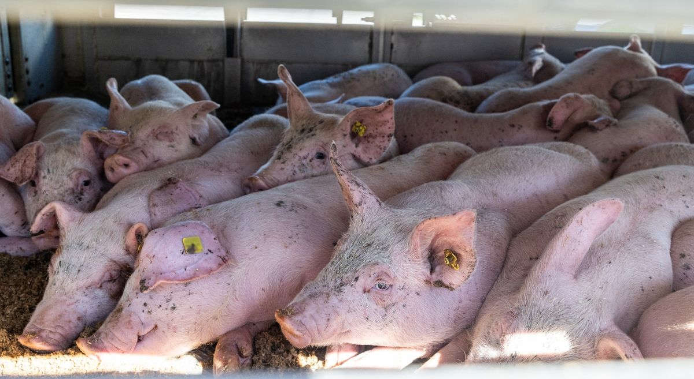

STOP BRUTALE DYRETRANSPORTER
Dyretransporter og god dyrevelfærd går aldrig hånd i hånd. Derfor skal dyretransporter være så korte som mulige. Ingen dyretransporter bør vare mere end 8 timer, og ingen levende dyr må transporteres ud af EU.

Vi kræver bedre transportvilkår
Transport af dyr i industrilandbruget bliver aldrig god dyrevelfærd. Derfor bør transporterne begrænses så meget som muligt og gennemføres så skånsomt som muligt for dyrene. De nuværende regler for transport af landbrugsdyr er desværre meget lempelige, og det betyder, at der er stor risiko for, at dyrene udsættes for lidelse under transporterne. Også når reglerne bliver overholdt! Det er på høje tide, at transportreglerne ændres, så lovgivningen får et langt større fokus på dyrevelfærd til gavn for de millioner af dyr, der hvert eneste år transporteres ud af Danmark. I Dyrenes Beskyttelse arbejder vi blandt andet for:
- Styrket kontrol af dyrenes forhold på eksportbilen ved afgang.
- Loft over transporttiden for dyr til både opfedning og slagtning.
- Forbud mod lange transporter af spædekalve.
- Stop for transporter af dyr til lande, hvor mindstekravene for dyrevelfærd ikke kan overholdes.
- Skærpelse af reglerne for dyretransporter i hele EU.
- At transporten af levende landbrugsdyr videst muligt erstattes af transport af kød og andre animalske produkter.